Período Jomon (c. 14.000 – 300 a.C.)
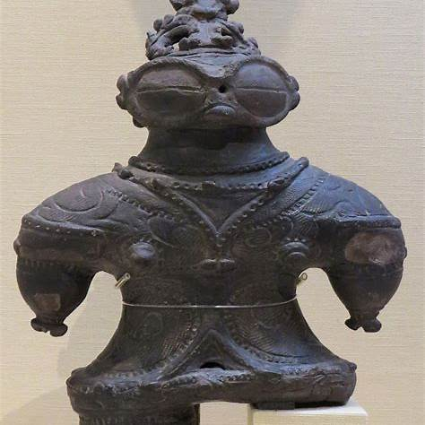 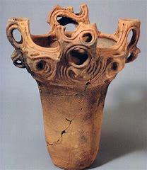O Período Jomon é o mais antigo da história japonesa, caracterizado por sociedades de caçadores-coletores. Durante esse tempo, os habitantes desenvolveram uma rica cultura expressa por suas famosas cerâmicas decoradas com cordões e padrões geométricos. Além disso, destacam-se as estatuetas Dogū, figuras de argila com formas humanoides e detalhes complexos, muitas vezes associadas a rituais de fertilidade e crenças espirituais. A organização social era simples, mas a criatividade na arte e na produção de utensílios revela um profundo conhecimento do ambiente natural. As práticas rituais e os cultos ligados à fertilidade e à natureza são evidentes nos vestígios arqueológicos, demonstrando uma relação íntima com o meio ambiente. As ferramentas de pedra, os utensílios cerâmicos e as Dogū encontradas nos sítios reforçam a capacidade técnica e a sensibilidade artística desses povos antigos.
Período Yayoi (c. 300 a.C. – 300 d.C.)
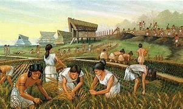No Período Yayoi, o Japão passou por uma transformação significativa com a introdução da agricultura e do cultivo do arroz, além do uso de metais como bronze e ferro. Essa mudança possibilitou a transição de uma vida nômade para uma existência mais sedentária, impulsionando o desenvolvimento de comunidades mais estruturadas. O intercâmbio cultural com o continente asiático trouxe novas técnicas e práticas, influenciando a produção cerâmica e as relações sociais. Esse período marca o surgimento das primeiras hierarquias sociais, que mais tarde se desenvolveriam em estruturas políticas mais complexas.
Período Kofun (c. 250 – 538 d.C.)
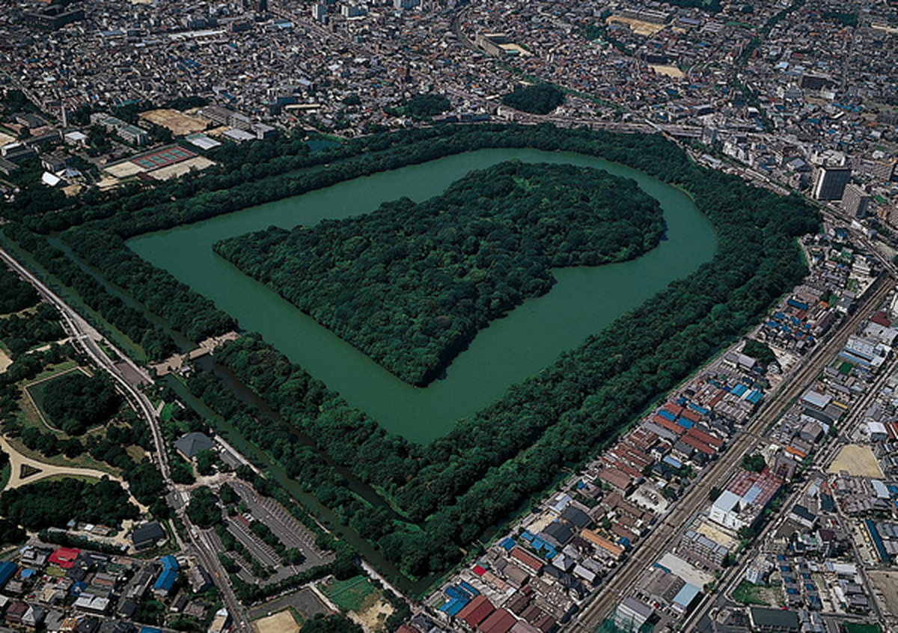O Período Kofun é conhecido pela construção dos enormes túmulos em formato de chave, que simbolizam o surgimento de uma elite governante e a centralização do poder. Esses túmulos são marcos da evolução social e política, demonstrando a consolidação de clãs e o fortalecimento de uma administração centralizada. Além dos túmulos, esse período foi crucial para o desenvolvimento do comércio e para o intercâmbio cultural com outras regiões da Ásia, o que contribuiu para a formação das bases da futura sociedade japonesa. Este túmulo, conhecido como Daisen Kofun, é um dos maiores kofun do Japão, com aproximadamente 486 metros de comprimento e 305 metros de largura. Construído no século V, acredita-se que seja o local de descanso do Imperador Nintoku.
Período Asuka (538 – 710)
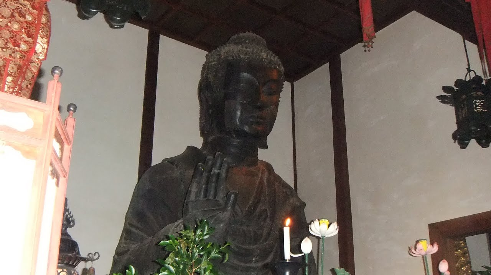 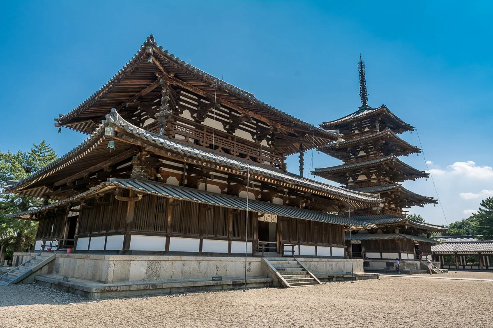Durante o Período Asuka, o budismo foi introduzido no Japão, provocando profundas transformações culturais e políticas. Essa nova religião, vinda da China e da Coreia, ajudou na centralização do poder e na implementação de reformas administrativas. A arte e a arquitetura desse período mostram a fusão entre as tradições locais e as influências estrangeiras, dando início a um intercâmbio cultural que influenciaria o desenvolvimento artístico e religioso do país por séculos. Esta estátua, conhecida como Asuka Daibutsu, é a mais antiga representação de Buda no Japão, datando de 609 d.C. Embora o templo tenha sofrido vários incêndios ao longo dos séculos, partes da face original, mão e orelha esquerda da estátua permanecem intactas. Acredita-se que a estátua tenha sido criada pelo escultor Kuratsukuri no Tori, também conhecido como Tori Busshi, um renomado artista do período Asuka. O Templo Asuka-dera, localizado na Vila de Asuka, Prefeitura de Nara, é considerado um dos templos budistas mais antigos do Japão e desempenhou um papel crucial na introdução e disseminação do budismo no país.
Período Nara (710 – 794)
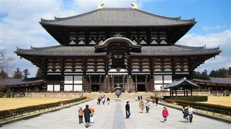 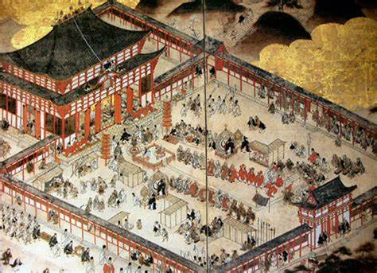O Período Nara foi um tempo de consolidação do estado japonês, com a criação de um sistema de governo centralizado inspirado na administração chinesa. A capital, Nara, tornou-se um importante centro de cultura, religião e política, onde os templos budistas e as obras de arte floresceram. Esse período também foi marcado pela compilação de textos históricos e literários que ajudaram a definir a identidade nacional, além de promover um intenso intercâmbio cultural com a Ásia continental.
Período Heian (794 – 1185)
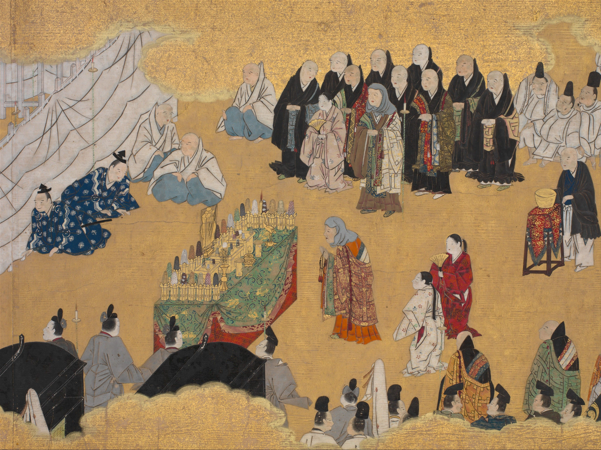 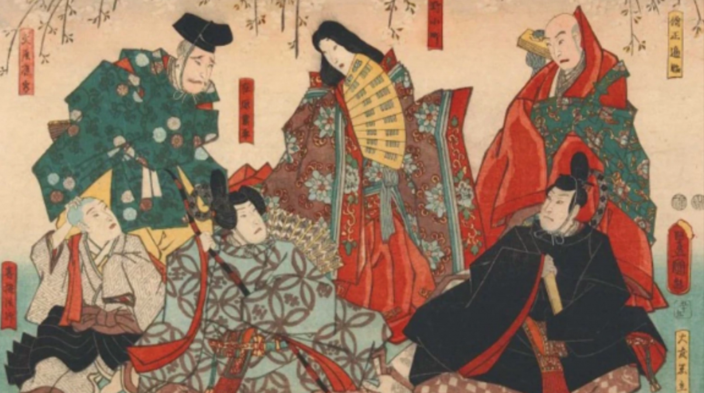O Período Heian é considerado a era dourada da cultura japonesa, onde a corte imperial desenvolveu uma sofisticada arte literária, musical e visual. Obras-primas, como o "Genji Monogatari", nasceram neste ambiente de refinamento e estética apurada. A convivência das tradições nativas com influências chinesas deu origem a um estilo único e elegante, que se refletiu na caligrafia, na pintura e na arquitetura, estabelecendo padrões que perdurariam por toda a história do Japão.
Período Kamakura (1185 – 1333)
 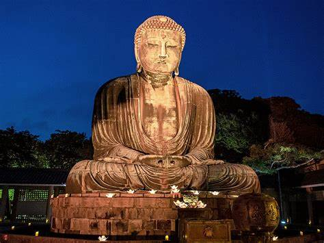
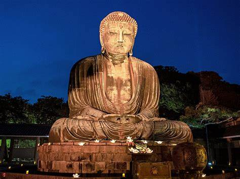
O Período Kamakura marcou o surgimento do governo militar dos samurais com a criação do bakufu. Esse período foi fundamental para a consolidação de uma nova ordem social baseada na disciplina, na lealdade e no código de honra dos guerreiros. Além da influência marcante dos samurais, o budismo Zen ganhou destaque, influenciando não só a filosofia, mas também as artes marciais e as práticas meditativas, elementos que se tornaram parte integrante da identidade japonesa.
Período Muromachi (1336 – 1573)
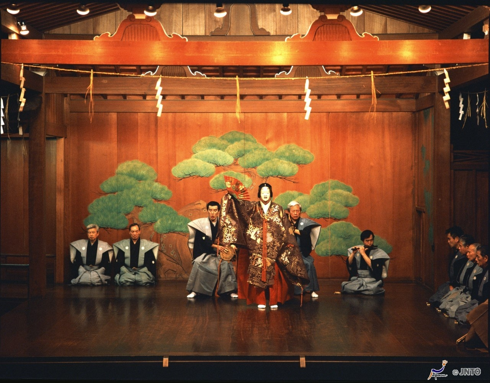 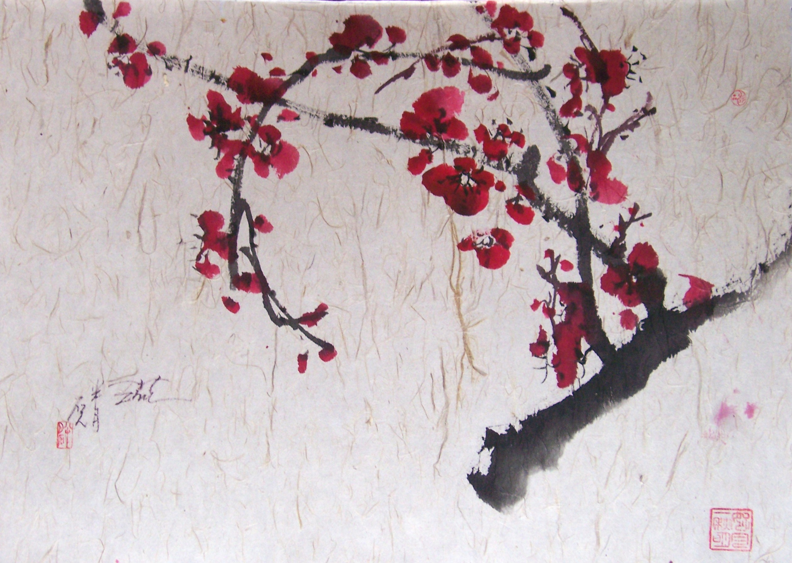Também conhecido como Período Ashikaga, o Muromachi foi marcado por intensas disputas internas e pela fragmentação do poder, apesar das quais as artes floresceram intensamente. A influência do budismo Zen se espalhou, dando origem a formas artísticas únicas como o teatro Noh e a pintura sumi-e. Esse período é lembrado pela rica produção cultural, que combinou a simplicidade estética do Zen com a complexidade das tradições japonesas, influenciando o desenvolvimento cultural nas gerações seguintes.
Período Azuchi–Momoyama (1573 – 1603)
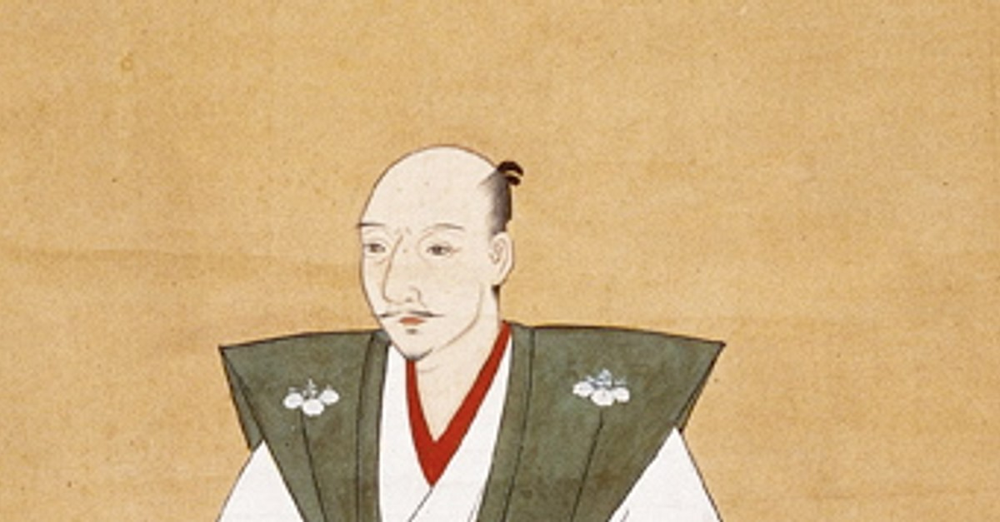
O Período Azuchi–Momoyama foi caracterizado pela unificação do Japão sob líderes poderosos como Oda Nobunaga, Toyotomi Hideyoshi e Tokugawa Ieyasu. Esse período ficou marcado pela construção de castelos imponentes e por um renascimento cultural que misturava ostentação e refinamento. As inovações arquitetônicas e as reformas políticas deste período prepararam o terreno para o longo período de paz que se instauraria no Período Edo, além de deixar um legado artístico que é celebrado até hoje. O Castelo de Azuchi foi construído por Oda Nobunaga em 1576, durante o Período Azuchi-Momoyama. Localizado à beira do Lago Biwa, em Shiga, o castelo era não apenas uma fortaleza militar, mas também um símbolo do poder de Nobunaga, com uma arquitetura inovadora e luxuosa. Seu destaque era a torre principal, que se elevava a uma altura impressionante, e as decorações internas ricas, que refletiam a grandiosidade e o status de Nobunaga.
Período Edo (1603 – 1868)
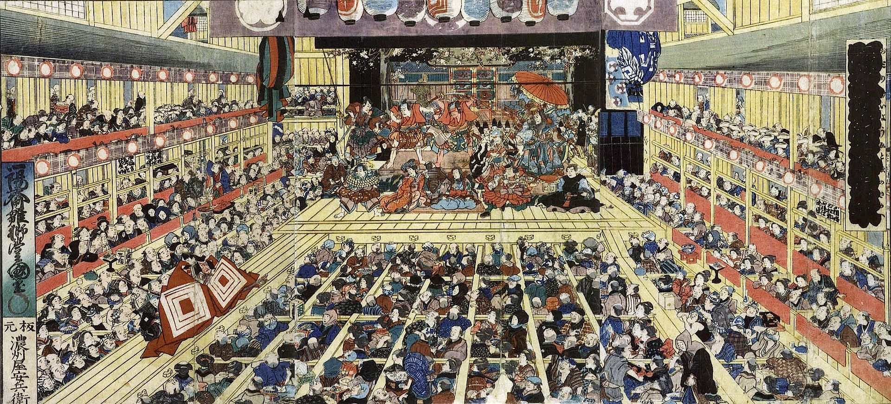
Durante o Período Edo, o Japão viveu um longo período de paz e isolamento (sakoku), que permitiu o desenvolvimento de uma cultura única. As cidades prosperaram e o país viu o florescimento de diversas formas de arte, como o kabuki, o ukiyo-e e a literatura popular. A sociedade era rigidamente estruturada em classes, mas ao mesmo tempo o isolamento favoreceu o surgimento de tradições culturais autênticas, que definem até hoje a identidade do Japão moderno.
Período Meiji (1868 – 1912)
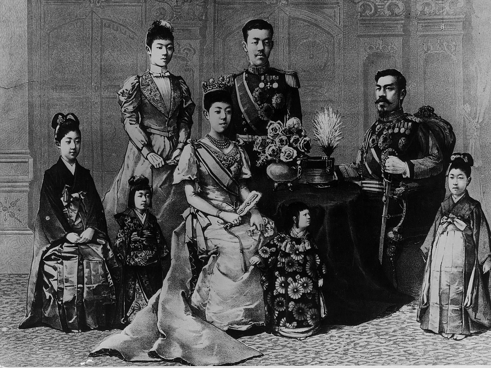 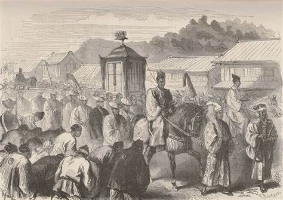A Restauração Meiji marcou o fim do feudalismo e a abertura do Japão ao mundo. O país passou por uma rápida modernização, adotando tecnologias ocidentais e reformulando sua estrutura política, econômica e social. Esse período foi decisivo para transformar o Japão em uma potência industrial e militar, promovendo a criação de um sistema educacional moderno, a construção de infraestrutura e a adoção de práticas democráticas e burocráticas inspiradas em modelos ocidentais.
Período Taisho (1912 – 1926)
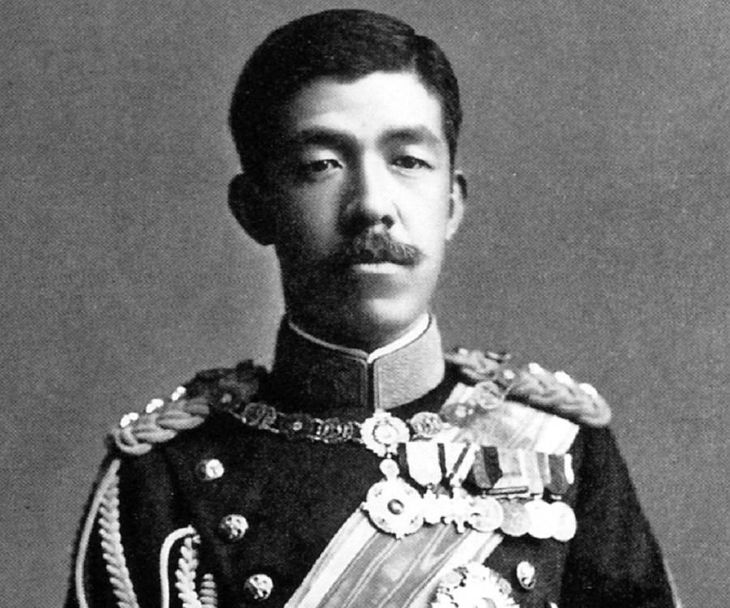 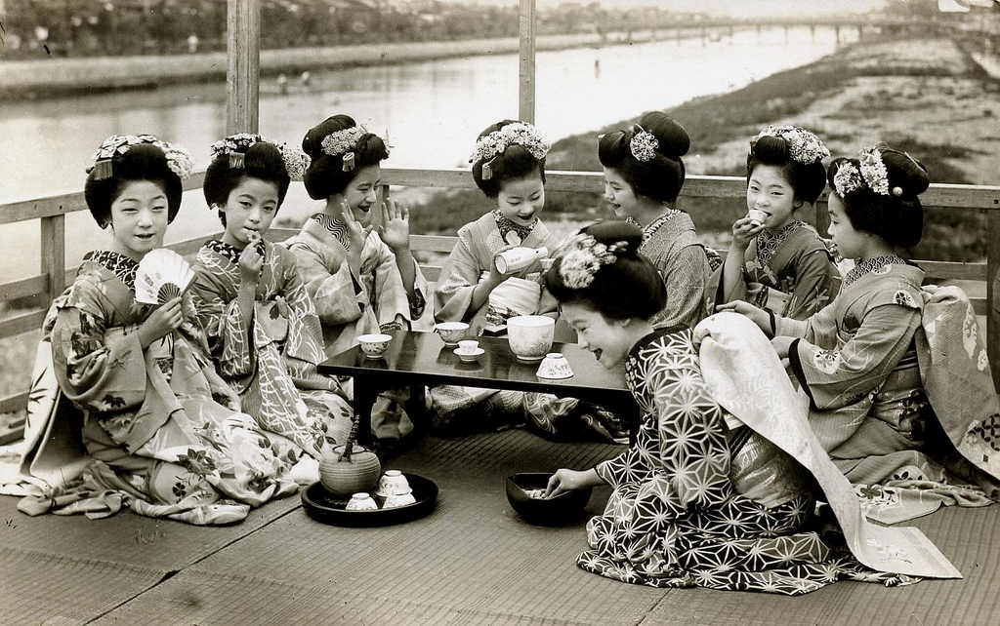O Período Taisho foi um tempo de experimentação e liberalismo, onde o Japão viu um breve florescimento da democracia e maior participação política. Esse período é marcado por uma abertura cultural e por inovações que impulsionaram as artes e a ciência. A influência das tendências ocidentais se misturou com as tradições japonesas, promovendo uma era de modernização gradual e de intensificação das relações internacionais, que prepararia o terreno para os desafios do século XX.
Período Showa (1926 – 1989)
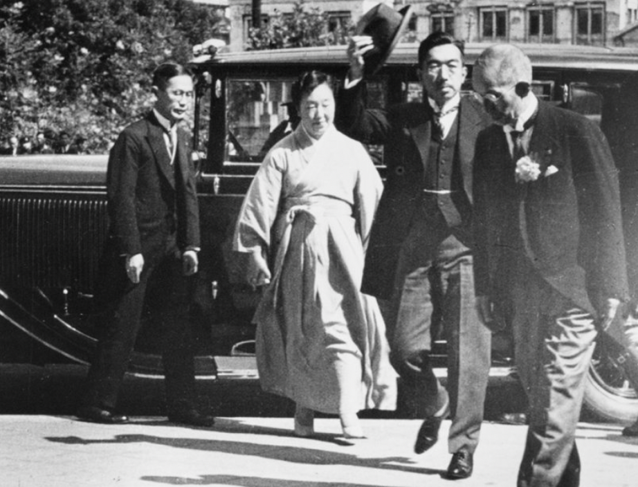 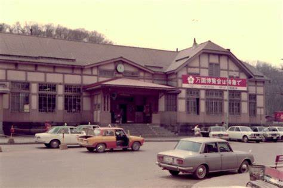O Período Showa abrange um dos períodos mais turbulentos e transformadores da história do Japão. Desde o militarismo que levou o país à Segunda Guerra Mundial até a impressionante reconstrução e o milagre econômico do pós-guerra, esse período foi marcado por mudanças radicais. As profundas transformações políticas, sociais e tecnológicas durante esse tempo reconfiguraram a identidade do Japão, tornando-o uma nação resiliente e inovadora, capaz de se reinventar diante dos desafios do século XX.
Período Heisei (1989 – 2019)
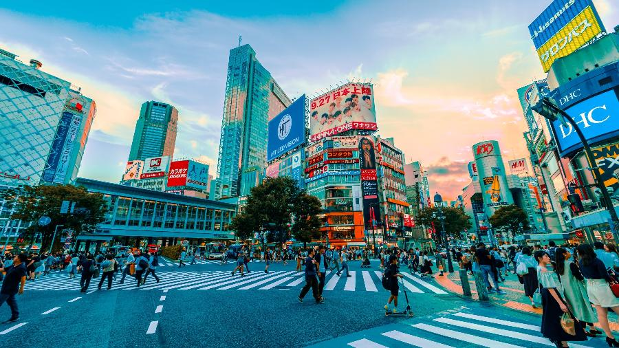O Período Heisei foi marcado por uma consolidação do Japão como potência econômica global, bem como por grandes avanços tecnológicos e mudanças sociais profundas. Durante esses anos, o país enfrentou desafios como a bolha econômica e desastres naturais, enquanto também se destacava em inovação e cultura pop. Esse período é lembrado pela integração do Japão no cenário global, o desenvolvimento das mídias digitais e a adaptação às transformações sociais, que redefiniram o modo de vida e a identidade cultural dos japoneses.
Período Reiwa (2019 – presente)
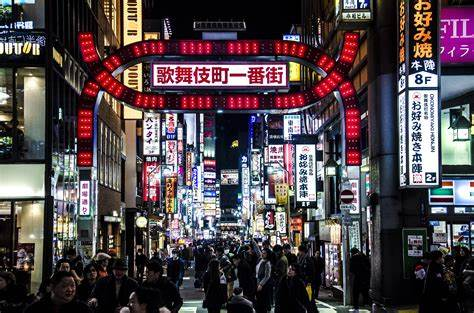 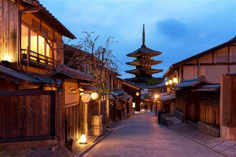O Período Reiwa, iniciado em 2019, representa a nova era do Japão, onde a modernidade convive com tradições milenares. O país enfrenta os desafios da globalização, da transformação digital e das mudanças climáticas, mantendo sua identidade cultural e histórica. Em Reiwa, o Japão continua a inovar em áreas como tecnologia, sustentabilidade e cultura pop, ao mesmo tempo em que preserva e valoriza suas raízes históricas. Essa era aponta para um futuro de adaptação constante e de novas possibilidades para a sociedade japonesa.